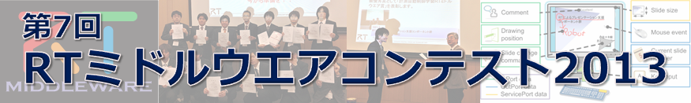

RTミドルウエアコンテスト2013

✏️ Edit this page on GitHub
No English version available.



#contents
いつも、RTミドルウエアへの技術フィードバックをいただき、ありがとうございます。ロボット技術のモジュール化の普及企画として、コミュニティの醸成を期待してRTミドルウエアコンテストを実施させていただいております。 今年も皆さんのご支援とご協力をいただきながら開催させていただくよう準備を進めておりますので、ソースコードを公開して技術の蓄積を図る試みに積極的にエントリいただくようお願い申し上げます。
最新情報
- 成果発表会を盛況に開催することができました。審査結果は[[プログラム>#program]]をご覧下さい。(2013.12.19)~
- RTミドルウェアコンテスト2013の作品リストを公開いたしました。(2013.10.03)~
- SI2013プログラム委員会が開催され、初日の12月18日（水）に成果発表会が割り当てられました。(2013.09.03)~
- 表彰（協賛）ページを掲載いたしました。~
- 今年もやります、RTミドルウエアコンテスト2013 !! 協賛および運営委員のボランティア募集中 !~ Webページをオープンいたしました。(2013.8.15)~
&aname(overview){};
開催案内
趣旨
RTミドルウエアは、ロボットを構成する様々な要素をモジュール化し、容易に組み合わせることができるようにするソフトウエア基盤としてのロボット用ミドルウエアです。モジュール化技術は、他の研究者などが開発した様々なアルゴリズムやセンサモジュールを統合してシステムを構築するのに適した技術です。しかし、その普及には便利なモジュールが提供されていることが不可欠であり、必要な部品が揃っていないと、開発者にはRTミドルウエアに対応する手間が増えるだけで、導入に躊躇することになります。
現在、RTミドルウエアのフレームワークとなるコンポーネントモデルはソフトウエアの国際標準化団体であるOMGに おいて標準仕様として採用された状況で、ロボット技術を国際的にリードするためにも国内での普及が不可欠です。そこで、ロボット技術の共有と蓄積を図るために、有益なコンポーネントを充実させるべく本コンテストを開催することにしました。また、このコンテストを通して、これからのロボットソフトウエア開発者に不可欠なRTミドルウエアに精通する技術者も育成できるものと期待しています。
開催概要
※計測自動制御学会 システムインテグレーション部門講演会 (SI2013)の特別セッションとしての企画になりますので、SI2013に講演を申し込むとともに、参加費の支払いと成果発表プレゼンテーションが必要となることをあらかじめご了承ください。 ‘‘（募集要項） （FAQ）’’
- 日時: 2013年12月18日（水）（SI2013の初日に成果発表会と表彰式）
- 場所: 神戸国際会議場
- 申込締切: 2013年 8月23日（金）
- 原稿〆切: 2013年 9月27日（金）
募集作品
本年度も、昨年に引き続き、システム構築に便利なソフトウェアライブラリやハードウェア要素の部品化（RTコンポーネント化）、RTミドルウエア技術を利用した開発ツールを対象とするとともに、既開発の部品（RTコンポーネント）を組み合わせたシステムによるロボットサービスの実現も募集対象とします。
応募資格
制限はありません。高専・大学等の学生や教員、企業・公設研等の技術者・研究者、個人の趣味で取り組まれている方、どなたでも結構です。
コンテストの趣旨の普及を図る点から、ソースコード（システム構成情報を含む）の公開をあらかじめご承諾ください。ソフトウエアの著作権に関しては著者が責任を持つと共に、利用者のためにライセンスを明示いただくようお願い致します（制約がある場合を除いて、BSDやLGPL等のよく使われているオープンソースライセンスをお勧めします）。 市販製品や他のオープンソースなどのライブラリを利用する場合は、それを明示するとともに利用者にその入手先が分かるようにしてください。知財権などの問題がありますので、学生さんは指導教員を共著者に加えて、事前に参加許可を得てからお申し込みください。
主なスケジュール
- 9月23日（金）: エントリ〆切 （SI2013講演申込み〆切）
- 9月27日（金）: 原稿〆切（SI2013原稿〆切）
- 10月中旬頃: ホームページにてソフトウエア登録開始（一般ユーザへの公開開始）
- 12月初旬頃： プログラム及び資料登録締め切り
- 12月4日～17日: オンライン評価期間 (一般ユーザによるオンライン評価期間)
- 12月18日：SI2013会場にて、プレゼンテーションと表彰者発表
応募手順
今年度のコンテストの応募はすでに終了いたしました。たくさんのご応募ありがとうございました。;
- [[事前登録:#toc16]]（すでに終了）~ このページ下部に連絡先の登録フォームがあります。
- SI2013への発表申込（8月下旬頃）~ 申込セッションとして「特別OS：RTミドルウエアコンテスト2013」、講演の種類として「一般講演」をそれぞれ選択し、講演題目のところに開発したRTコンポーネントや関連技術の名称を、著者のところに開発者の情報をそれぞれ記入お願いいたします。学生さんがエントリする場合は事前に指導教員の了承を得るとともに、指導教員を共著者として登録いただくようお願いいたします。
- SI2013への予稿原稿の投稿（9月27日）~ 投稿規定に従って、講演予稿集のための2～4ページの原稿を作成し、投稿ください。
- SI2013への参加登録 ~ 事前参加登録の〆切りまでに参加登録を行い、参加費支払手続きをしていただくとお得です。
- [[OpenRTM-aist Webサイト:openrtm.org]]への作品登録（11月末頃までに）
- ソースコード
- マニュアル
- 概要説明のスライド
- 作品紹介の動画等
が必要となります。特に、SI2013への参加には参加登録料が必要となりますことを予めご了承ください。また、SI2013の会場にてプレゼンテーションを行うことが求められます。 SI2013の申込方法、申込および原稿〆切および具体的な開催日時やプログラムは SI2013のホームページ にてご確認下さい。
OpenRTM-aist Webサイトへの作品の登録
発表する作品は、
- OpenRTM-aist Webサイトのプロジェクト(no_link)として登録すること。（プロジェクトページに紹介ビデオを掲載することを推奨）
- ソースコードをオープンにすること。
- 分かりやすいマニュアルを添付し、できるだけ第三者が結果を再現できるようにすること。
- 参考にしたRTコンポーネントやソースコードがある場合は、マニュアル・論文中で出典を明記してオリジナル作者に敬意を払うこと。
- 参考にした論文などがある場合、マニュアル、論文中で出典を明記すること。
論文の参考文献のように、お互いに成果を尊重し合う文化を醸成し、論文のインパクトファクターのソースコード版が将来的に実現できればと考えています。
主催・協賛（予定）
- [共同主催] ロボットビジネス推進協議会
- [共同共催］ （社）計測自動制御学会 システムインテグレーション部門
- [共同共催］ （独）産業技術総合研究所 知能システム研究部門
- [共催］ 神戸市
- [協賛］ 奨励賞を提供いただく団体、個人など （詳細は表彰(協賛)ページ参照）
実行委員会
- 実行委員長 平井成興 (ロボットビジネス推進協議会）
- 実行副委員長 山下智輝 (SlCE RTシステムインテグレーション部会主査）
- 審査委員長 安藤慶昭 (産総研）
- 広報委員長 神徳徹雄 (産総研）
&aname(program){};
プログラム
| 第B室 第1スロット（10:30-12:00 ） | 審査結果 | |
| 1B1-2 (10:45-11:00) |
対話型システムのためのRTコンポーネント群 産総研 ○原 功 |
インタラクションコンポーネント賞 グローバルアシスト賞 |
| 1B1-3 (11:00-11:15) |
RaspberryPi上でのI2Cセンサデバイスに関するコンポーネント群の実装 産総研 ○関山 守，入江 世正，谷川 民生 |
|
| 1B1-4 (11:15-11:30) |
RaspberryPi専用カメラを用いた画像処理・画像認識RTコンポーネント群の実装 産総研 ○関山 守，田中 秀幸，鶴岡工業高専 昆 憲英，産総研 谷川 民生 |
|
| 1B1-5 (11:30-11:45) |
PSDを用いた相互位置検出モジュール 芝浦工大 ○新井 孝，生田目 祥吾，松日楽 信人 |
PiRT-Unit賞 |
| 1B1-6 (11:45-12:00) |
ロボットマニピュレータのためのシミュレータ RTC 立命館大 ○森下 愛実，李 周浩 |
|
| 第B室 第2スロット（13:00-14:30 ） | 審査結果 | |
| 1B2-1 (13:00-13:15) |
Webコンテンツに対する反応を提示するデバイスの開発 芝浦工大 ○浦野 羅馬，池田 亨平，佐々木 毅 |
NTTデータ賞 ベストコンセプト賞 |
| 1B2-2 (13:15-13:30) |
チーム開発力の向上を目指したRTミドルウェアによるゲーム開発 芝浦工大 ○鈴木 弥絵，榎谷奈々，近藤 貴大，佐々木 毅 |
|
| 1B2-3 (13:30-13:45) |
自動車分野へのOpenRTMの導入 東京理科大 ○久原 太志，田中献人，太田 雅仁，小木津 武樹，竹村 裕，溝口 博 |
アドイン賞 |
| 1B2-4 (13:45-14:00) |
RTミドルウエアの産業応用を目的としたエンジニアリングサンプルの開発 埼玉大 ○高橋 直希，藤間 瑞樹，程島 竜一，琴坂 信哉 |
優秀ＲＴ技術賞 サマーキャンプ賞 計測自動制御学会ＲＴミドルウエア賞（最優秀賞） |
| 1B2-5 (14:00-14:15) |
RTミドルウエアの産業応用を目的としたロボットアーム制御機能共通I/F拡張の提案 埼玉大 ○藤間 瑞樹，高橋 直希，程島 竜一，琴坂 信哉 |
日本ロボット工業会賞 |
| 1B2-6 (14:15-14:30) |
レコードスケッチ 早稲田大 ○寺田 翔太，佐々木一磨，有江 浩明，野田 邦昭，菅佑樹，尾形 哲也 |
|
| 第B室 第3スロット（14:45-16:15 ） | 審査結果 | |
| 1B3-1 (14:45-15:00) |
マルチメディア向けグラフィカル統合開発環境「MAX」とRTCを繋ぐブリッジプラグインの開発 早稲田大 ○佐々木 一磨，寺田翔太，有江 浩明，野田 邦昭，菅佑樹，尾形 哲也 |
|
| 1B3-2 (15:00-15:15) |
自律・遠隔操作可能な追尾カメラ 芝浦工大 ○石田 真一，荻谷浩史，生田目 祥吾，松日楽 信人 |
maxon Ｘ drives賞 ロボットサービスイニシアチブ（ＲＳｉ）賞 |
| 1B3-3 (15:15-15:30) |
RTM on Androidを用いたAndroid用マルチセンサコンポーネント群 芝浦工大 ○立川 将，大野 祥平，佐々木 毅 |
長瀬賞 便利ツール賞 SUGAR SWEET ROBOTICS賞 |
| 1B3-4 (15:30-15:45) |
メディアアートへのRTミドルウェアを用いた開発手法の提案 芝浦工大 ○土屋 彩茜，立川 将，佐々木 毅 |
RTミドルウエアを普及しま賞 女流ＲＴＣ賞 ベストサポート賞 ＲＴイノベーション賞 |
| 1B3-5 (15:45-16:00) |
動的システム変更を実現するRTCセットの開発 芝浦工大 田畑 伸頼，○藤岡 峻，水川 真 |
チェンジビジョン賞 |
| 1B3-6 (16:00-16:15) |
小型移動体のSLAM検証を行う環境を整える6自由度マニピュレータ 筑波大/産総研 ○村上 青児，産総研 原 功，安藤 慶昭，関山 守，谷川 民生，神徳 徹雄 |
|
| 第B室 第4スロット（16:30-18:00 ） | 審査結果 | |
| 1B4-1 (16:30-16:45) |
ＷＥＢサービスを利用した対話支援ＲＴＣ群の開発 玉川大 ○下斗米 貴之，岡田 浩之 |
ウィン電子工業賞 |
| 1B4-2 (16:45-17:00) |
kartoライブラリを用いた自律地図作成システム 玉川大 ○林 優介，下斗米 貴之，岡田 浩之 |
|
| 1B4-3 (17:00-17:15) |
屋内環境における活動支援を目的とした小型サービスロボットの開発 電通大 ○二瓶 陽介，松田 啓明，平井 雅尊，末廣 尚士 |
|
| 1B4-4 (17:15-17:30) |
自動アングル機能を有したロボットカメラ 芝浦工大 ○生田目 祥吾，石田真一，松日楽 信人 |
トヨタ自動車(株)パートナーロボット賞 |
| 1B4-5 (17:30-17:45) |
移動ロボット知覚制御用RTC 群の開発と学生実験での利用 電通大 Attamimi Muhammad，中村 友昭，○長井 隆行 |
ＲＴＣ再利用賞 ヴイストン ロボットショップ賞 |
&aname(evaluation){};
評価する
RTミドルウエアコンテストは、コミュニティの皆で作り上げるイベントです。作品を応募するのもひとつの貢献方法ですが、応募された作品を評価して技術フィードバックをすることや、協賛として課題を設定した奨励賞を提供することなど、皆さんのご協力をお待ちしております。
作品へコメントする
応募作品が集まりましたら、本Webサイト上で掲示いたします。 応募作品を実際に動かしてみるなどして試していただき、どのような環境で動作したか/しなかったか、バグやその修正のためのパッチ情報、作品に対するコメントや感想を作品のプロジェクトページに書き込み、作者にフィードバックすることが出来ます。 これらのフィードバックを元に応募者が改良を加え、SI2013でのプレゼンテーションまでに、より良い作品になるようご協力ください。
- コメントの書き方ガイド
- コンテスト作品一覧へ(no_link)
奨励賞を提供する
趣旨に賛同いただく企業（一口 2万円）、個人（一口 1万円）の協賛金で、どのような作品を期待しているかを指定した奨励賞を提供することができます。また、副賞として自社製品を提供する特別協賛や賞品協賛にもご協力ください。製品の宣伝とともに、その製品を使用したRTコンポーネントを募集するといった双方にメリットのある奨励賞に出来ればと考えています。
&aname(award){};
表彰
ロボット技術の蓄積と共有を促進することを狙って、優れた開発成果を表彰いたします。
- 最優秀賞（学会賞) : 1件、副賞10万円
- 奨励賞（賞品協賛）: 若干、製品提供
- 奨励賞 (団体協賛) : 若干、副賞２万円
- 奨励賞 (個人協賛) : 若干、副賞１万円
総合評価として一番優秀な成果に対して、最優秀賞として「計測自動制御学会RTミドルウエア賞」を、 また、それぞれのスポンサーの視点から魅力的な開発成果に対して奨励賞を表彰いたします。多くの支持を集めた魅力的な作品ほど数多く奨励賞を獲得する、一種の投票システムになっています。（詳細は表彰(協賛)ページ参照）
ビギナー限定奨励賞
投票制度をコンセプトとした奨励賞ですが、新規参入者の奨励のために、コンテストの初心者（奨励賞の未受賞者）に限定したビギナー限定の奨励賞を設けています。
審査
審査委員会にて成果発表プレゼンテーションを含めて総合的に審査させていただきます。評価基準は、以下を総合的に判断いたします。
- 相互運用性を考えた機能のモジュール化やインタフェース設計、
- ユーザマニュアルの完成度、
- ソフトウエア（プログラム）としての完成度、
- 期間内に報告されたバグへの対応状況、
- 開発成果プレゼンテーションの優劣など
&aname(pastwork){};
過去のコンテスト情報
- RTミドルウエアコンテスト2007
- （応募作品(no_link)）
- RTミドルウエアコンテスト2008
- （応募作品(no_link)）
- RTミドルウエアコンテスト2009
- （応募作品(no_link)）
- RTミドルウエアコンテスト2010
- （応募作品(no_link)）
- RTミドルウエアコンテスト2011
- （応募作品(no_link)）
- RTミドルウエアコンテスト2012
- （応募作品(no_link)）
&aname(contact){};
お問い合わせ
まず、コンテストのFAQを確認いただき、問い合わせ内容に応じて下記に連絡ください。
-
応募に関すること：~ RTミドルウエアコンテスト事務局 [contest2013
openrtm.org](mailto:contest2013@openrtm.org) -
冠賞のスポンサー申込に関すること：~ ロボットビジネス推進協議会事務局 [RTMcontest-JARA-ml
aist.go.jp](mailto:rtmcontest-jara-ml@aist.go.jp) -
RTミドルウエアの技術的なご相談：~ RTミドルウエアのフォーラムや、 メーリングリスト [ rtm-users
openrtm.org ：要事前登録] にお問い合わせいただき、情報の共有に御協力ください。
RTミドルウエアコンテスト2013 事務局
〒305-8568 茨城県つくば市梅園１－１－１
産業技術総合研究所 知能システム研究部門
rtmcontest2013-ml@aist.go.jp
- &aname(registration){}; ## 作品登録
プロジェクトページへの作品登録
応募作品はプロジェクトページに登録する必要があります。
上記のプロジェクト作成マニュアルに則り、作品を登録してください。RTミドルウエアコンテストでは、プロジェクト登録されたコンポーネントなどがコンテスト応募作品であるかどうかを明確にするために以下のルールを取っております。下記ルールに従い作品を登録してください。
- ボキャブラリ RTM contest 2013 を設定する
- プロジェクト登録画面にボキャブラリと呼ばれるタグを設定する画面が現れますが、そこで RTM contest 2013 を選択してください。これによりRTMコンテスト参加作品であることがわかります。
- プロジェクト名をSIの発表タイトルとできるだけ同じ名前に設定する
- 審査の都合上、SIの発表タイトルとプロジェクト名をひも付ける必要があります。可能であればSI2013での発表タイトルと同じ名前でプロジェクトの登録をお願いいたします。ただし、論文タイトルが 「○○の□□コンポーネントの実装」のようなものの場合、プロジェクト名は 「○○の□□コンポーネント」としていただいた方が、プロジェクトページとしては妥当かと思われます。発表タイトルとプロジェクトの関係がわかる程度でプロジェクト名を設定していただきますようよろしくお願いいたします。
- プロジェクト情報「Short project name」をcontest2013_<セッション番号>としてください
- 上記だけだと、論文・発表とプロジェクトの対応が一意に取れませんので、プロジェクト情報の「Short project name」を下記のフォーマットで入力してください
contest2013_1B?-? - 1B?-?はSI2013でのセッション番号・発表番号です。ご自分のセッション番号・発表番号は上記プログラムで見ることができます。これによりURLは
http://openrtm.org/openrtm/ja/project/contest2013_1B?-?となります。
- 上記だけだと、論文・発表とプロジェクトの対応が一意に取れませんので、プロジェクト情報の「Short project name」を下記のフォーマットで入力してください
当Webページへの登録 既に終了しました。;
エントリ希望者は、個別に連絡が取れるように、以下のフォームを使って事前登録して下さい。（SI2013の講演申込を済ませてから正式登録となります。重要な案内をお送りするための事前登録ですので、エントリを迷っている時は気軽に事前登録してください）
- 事前登録するまえにwww.openrtm.orgサイトのユーザ登録をお願いします。ユーザ登録はこちら
- 当サイトに登録済みの方は名前の欄にユーザ登録されたユーザ名が出ますが、必ず、氏名に書き換え;てください。
※お手数ですが、ユーザ登録したユーザ名でログインしていただくと、登録フォームが表示されます;